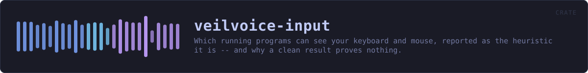

veilvoice-input
Which running programs can see your keyboard and mouse, reported as the heuristic it is -- and why a clean result proves nothing.
reference · the same page on GitHub
What on this machine could be watching the keyboard and the mouse.
This is a heuristic, and the crate is built to keep saying so
There is no way to ask an operating system "is anything logging my keystrokes" and get a true answer. The mechanisms a keylogger uses are the same ones accessibility software, password managers, remote-support tools, macro utilities and games legitimately use, and the good ones are written not to be found. A tool that claimed to detect keyloggers would be making a promise nothing can keep.
So this does the one thing that can be done honestly: it names the programs running right now that are able to see your input, says what each one is for, and leaves the judgement where it belongs. Every finding is phrased as capability, never as an accusation, and Finding::phrasing exists so that no front end has to invent that wording and get it wrong.
LIMITS is the paragraph a front end must show beside any result. It says outright that a clean result proves nothing. That is not a disclaimer bolted on; it is the most important thing this crate outputs, because somebody who reads "nothing found" as "nothing there" has been made less safe by running it.
What it does not do, deliberately
It does not hook the keyboard, read input, count keystrokes, time them, or watch the mouse. A program that monitored input to detect input monitoring would be the thing it warns about, and on Windows it would need the same SetWindowsHookEx that #![forbid(unsafe_code)] rules out anyway.
It also does not scan memory, inspect other processes' handles or read the registry's autostart keys. veilvoice-watch already covers persistence, and duplicating it here would give two answers to one question.
In plain words
Software that records what you type is real, and there is no honest way for any program to tell you for certain whether it is on your computer. Anything that claims otherwise is guessing and not admitting it.
What this does instead: it looks at which programs are open, and tells you which of them could see your typing or your mouse -- remote-support tools, macro recorders, accessibility software, and so on. Most of the time these are things you installed on purpose and there is nothing wrong. The point is that you get to know they are running and decide for yourself.
If it finds nothing, that does not mean nothing is watching. It means nothing it knows how to recognise is open, which is a much smaller claim, and this crate will keep saying so every time.
HOW THE CRATE FITS TOGETHER
Every arrow is a crate:: or super:: path one module actually uses, read out of the source rather than drawn by hand.
The same graph as Mermaid source
%%{init: {"theme":"base","themeVariables":{"background":"#1a1b26","primaryColor":"#1f2335","primaryTextColor":"#c0caf5","primaryBorderColor":"#7aa2f7","secondaryColor":"#16161e","tertiaryColor":"#16161e","lineColor":"#737aa2","textColor":"#c0caf5","mainBkg":"#1f2335","nodeBorder":"#7aa2f7","clusterBkg":"#16161e","clusterBorder":"#2f3549","fontFamily":"ui-monospace, SFMono-Regular, Consolas, monospace","fontSize":"14px"}}}%%
flowchart TD
n_lib(["lib.rs<br/>607 lines"])
click n_lib href "https://github.com/tilas01/veilvoice/blob/main/crates/veilvoice-input/src/lib.rs" "open the source"This site loads no third-party script, so it cannot run Mermaid; the diagram above is the same nodes and edges drawn by the generator instead. GitHub renders the source below directly.
THE FILES
| File | Lines | What it is |
|---|---|---|
lib.rs | 607 | What on this machine could be watching the keyboard and the mouse. |